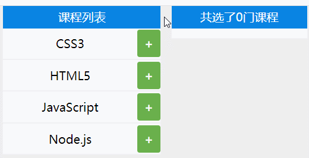

Map Map是一组键值对的结构，用于解决以往不能用对象做为键的问题
声明定义 接受一个数组作为参数，该数组的成员是一个表示键值对的数组。
1 2 3 4 5 let map = new Map([ ["name", "ashun"], ["age", 18], ]); console.log(map); //Map(2) {"name" => "ashun", "age" => 18}
使用构造函数new Map创建的原理如下
1 2 3 4 5 6 7 const as = new Map(); const arr = [["ashun", "阿顺"], ["type", "Controller"]]; arr.forEach(([key, value]) => { as.set(key, value); }); console.log(as);
对于键是对象的Map， 键保存的是内存地址，值相同但内存地址不同的视为两个键。
1 2 3 4 5 let arr = ["阿顺"]; const as = new Map(); as.set(arr, "Ashuntefannao.com"); console.log(as.get(arr)); //"Ashuntefannao.com console.log(as.get(["阿顺"])); //undefined
管理Map set 使用set(key,value) 方法添加元素，支持链式操作
1 2 3 4 5 6 7 8 let map = new Map(); let obj = { name: "Ashun" }; map.set(obj, "Ashuntefannao.com").set("name", "ashun"); console.log(map.entries()); //MapIterator {{…} => "Ashuntefannao.com", "name" => "ashun"}
delete 使用delete(key)删除对应键和值。返回Boolean。
1 2 3 4 5 6 let map = new Map([ ["name", "ashun"], ["age", 18], ]); map.delete("age"); console.log(map); //Map(1) {"name" => "ashun"}
clear 使用clear()清空Map。
1 2 3 4 5 6 let map = new Map([ ["name", "ashun"], ["age", 18], ]); map.clear(); console.log(map); //Map(0) {}
遍历数据 由于Map数据类型是可迭代的，所以可以通过for/of、forEach或迭代器进行遍历。
使用 keys()/values()/entries() 都可以返回可遍历的迭代对象。
1 2 3 4 5 6 7 let map = new Map([ ["Ashun", "阿顺"], ["tefannao", "特烦恼"], ]); console.log(map.keys()); //MapIterator {"Ashun", "tefannao"} console.log(map.values()); //MapIterator {"阿顺", "特烦恼"} console.log(map.entries()); //MapIterator {"Ashun" => "阿顺", "tefannao" => "特烦恼"}
可以使用keys/values 函数遍历键与值
1 2 3 4 5 6 7 let as = new Map([["Ashun", "阿顺"], ["tefannao", "特烦恼"]]); for (const key of as.keys()) { console.log(key); } for (const value of as.values()) { console.log(value); }
使用for/of遍历操作，直接遍历Map 等同于使用entries() 函数
1 2 3 4 5 6 7 8 9 10 let as = new Map([ ["Ashun", "阿顺"], ["tefannao", "特烦恼"], ]); for (const [key, value] of as) { console.log(`${key}=>${value}`); } for (const [key, value] of as.entries()) { console.log(`${key}=>${value}`); }
使用forEach遍历操作
1 2 3 4 let as = new Map([["title", "Ashuntefannao"], ["name", "Ashun"]]); as.forEach((value, key) => { console.log(`${key}=>${value}`); });
has 使用has(key)查找是否有该元素。返回Boolean
1 2 3 4 5 let map = new Map([ ["name", "ashun"], ["age", 18], ]); console.log(map.has("as")); //false
get 使用get(key)读取对应的Value。
1 2 3 4 5 6 let obj = { name: "Ashun" }; let map = new Map(); map.set(obj, "SHUN"); console.log(map.get(obj)); //"SHUN" console.log(map.get({ name: "Ashun" }));//undefined
size 使用size属性，查看Map的长度。
1 2 3 4 5 let map = new Map([ ["name", "ashun"], ["age", 18], ]); console.log(map.size); //2
节点集合 map的key可以为任意类型，下面使用DOM节点做为键来记录DOM的desc属性。
1 2 3 4 5 6 7 8 9 10 11 12 13 14 15 16 17 18 <body> <div desc="阿顺特烦恼">Ashuntefannao</div> <div desc="阿顺">ashun</div> </body> <script> const divs = document.querySelectorAll("div"); let map = new Map(); divs.forEach((elem) => { map.set(elem, { desc: elem.getAttribute("desc") }); }); map.forEach((val, elem) => { elem.addEventListener("click", (_) => { alert(val.desc); }); }); </script>
实例操作 当不接受协议、不符合条件时无法提交表单，并根据自定义信息提示用户。
以下代码巧妙之处在于：灵活的转化了数据类型，利用数组的every方法返回的Boolean，判断是否满足所有条件，如果有一个不满足，返回false，表单数据也就不会提交。
1 2 3 4 5 6 7 8 9 10 11 12 13 14 15 16 17 18 19 20 21 22 23 <body> <form action="#" onsubmit="return commmit()"> <label><input type="checkbox" message="请接受协议" />接受</label> <label><input type="checkbox" message="本网站只对学生开放" />学生</label> <button>commit</button> </form> </body> <script> function commmit() { let map = new Map(); let checkboxs = document.querySelectorAll("[type='checkbox']"); checkboxs.forEach((v) => { map.set(v, {message:v.getAttribute("message"),isSelect:v.checked}); }); return [...map].every((item,index)=>{ let [elem,obj]=item; obj.isSelect||alert(obj.message); return obj.isSelect }); } </script>
WeakMap WeakMap 对象是一组键/值对的集
键名必须是对象
WeaMap对键名是弱引用的，键值是正常引用
垃圾回收不考虑WeaMap的键名，不会改变引用计数器，键在其他地方不被引用时即删除
不可迭代 ，因为WeakMap 是弱引用，由于其他地方操作成员可能会不存在，所以不可以进行forEach( )遍历等操作
也是因为弱引用，WeaMap 结构没有keys( )，values( )，entries( )等方法和 size 属性
当键的外部引用删除时，希望自动删除数据时使用 WeakMap
声明定义 以下操作由于键不是对象类型将产生错误
1 new WeakMap([["ashun", "tefannao"]]); // TypeError: Invalid value used as weak map key
将DOM节点保存到WeakMap
1 2 3 4 5 6 7 8 9 <body> <div>ashuntefannao.com</div> <div>Ashun</div> </body> <script> const Wmap = new WeakMap(); document.querySelectorAll("div").forEach(item => Wmap.set(item, item.innerHTML)); console.log(as); //WeakMap {div => "ashuntefannao.com", div => "Ashun"} </script>
基本操作 下面是WeakMap的常用指令
1 2 3 4 5 6 7 8 9 10 11 const Wmap = new WeakMap(); const arr = ["ashun"]; //添加操作 Wmap.set(arr, "Ashuntefannao"); console.log(Wmap.has(arr)); //true //删除操作 Wmap.delete(arr); //检索判断 console.log(Wmap.has(arr)); //false
垃圾回收 WakeMap的键名对象不会增加引用计数器，如果一个对象不被引用了会自动删除。
下例当as删除时内存即清除，因为WeakMap是弱引用不会产生引用计数
当垃圾回收时因为对象被删除，这时WakeMap也就没有记录了
1 2 3 4 5 6 7 8 9 let map = new WeakMap(); let as = {}; map.set(as, "Ashun"); as = null; console.log(map); //WeakMap {{…} => "Ashun"} setTimeout(() => { console.log(map); //WeakMap {} }, 3000);
选课案例 
1 2 3 4 5 6 7 8 9 10 11 12 13 14 15 16 17 18 19 20 21 22 23 24 25 26 27 28 29 30 31 32 33 34 35 36 37 38 39 40 41 42 43 44 45 46 47 48 49 50 51 52 53 54 55 56 57 58 59 60 61 62 63 64 65 66 67 68 69 70 71 72 73 74 75 76 77 78 79 80 81 82 83 84 85 86 87 88 89 90 91 92 93 94 95 96 97 98 99 100 101 102 103 104 105 106 107 108 109 110 111 112 113 114 115 116 117 118 119 120 121 122 123 124 125 126 127 128 129 130 131 132 133 134 135 136 137 138 139 140 141 142 143 144 145 146 147 148 149 150 151 152 153 154 155 156 157 158 159 160 161 162 163 164 165 166 167 168 169 170 171 172 173 <style> * { margin: 0; padding: 0; box-sizing: border-box; } body { width: 100vw; height: 100vh; position: relative; } main { margin: 0 auto; width: 80%; height: 100%; display: flex; justify-content: space-around; align-items: center; background-color: #eee; } .left, .right { display: flex; flex-direction: column; } .left { width: 50%; } .right { width: 43%; } .l_top, .r_top { width: 100%; height: 30px; background-color: #0984e3; color: white; line-height: 30px; text-align: center; } ul, .listBox { width: 100%; flex: 1; display: flex; background-color: white; } .listBox { flex-wrap: wrap; padding: 5px; padding-bottom: 8px; } ul { flex-direction: column; list-style: none; } ul > li { flex: 1; display: grid; grid-template-columns: 85% 15%; text-align: center; } ul > li:nth-of-type(n + 2) { border-top: 2px solid #eee; } .txt { padding: 10px 0px; } .btn { display: flex; justify-content: center; align-items: center; border-radius: 3px; margin: 2px 0px; transition: 0.8s; } .delete { background-color: #eb4d4b; } .add { background-color: #6ab04c; } .delete::before { content: "-"; font-weight: bold; color: #fff; } .add::before { content: "+"; font-weight: bold; color: #fff; } .list_item { display: inline-block; padding: 3px 10px; border-radius: 3px; background-color: #00cec9; margin: 8px 5px 0px 3px; color: white; } </style> <body> <main> <div class="left"> <div class="l_top">课程列表</div> <ul class="course"> <li class="course_item"> <span class="txt">CSS3</span><span class="btn add"></span> </li> <li class="course_item"> <span class="txt">HTML5</span><span class="btn add"></span> </li> <li class="course_item"> <span class="txt">JavaScript</span><span class="btn add"></span> </li> <li class="course_item"> <span class="txt">Node.js</span><span class="btn add"></span> </li> </ul> </div> <div class="right"> <div class="r_top">共选了<span class="count">0</span>门课程</div> <article class="listBox"></article> </div> </main> </body> <script> class Lesson { constructor() { this.course = document.querySelectorAll(".course_item"); this.countDom = document.querySelector(".count"); this.listBox = document.querySelector(".listBox"); this.Wmap = new WeakMap(); this.run(); } run() { this.course.forEach((li, index) => { let btn = li.querySelector(".btn"); btn.addEventListener("click", (e) => { let isSelect = btn.classList.contains("add"); if (isSelect) { btn.classList.remove("add"); btn.classList.add("delete"); this.Wmap.set(li, true); } else { btn.classList.remove("delete"); btn.classList.add("add"); this.Wmap.delete(li); } this.UpDate(); }); }); } UpDate() { this.listBox.innerHTML = ""; let selectArr = [...this.course].filter((v) => this.Wmap.has(v)); selectArr.forEach((li) => { let span = document.createElement("span"); span.classList.add("list_item"); span.innerText = li.querySelector(".txt").innerText; this.listBox.append(span); }); this.newCount(selectArr.length); } newCount(newNum) { this.countDom.innerText = newNum; } } new Lesson(); </script>